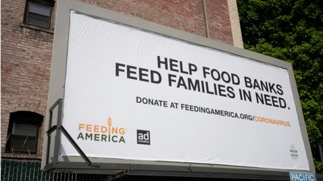

About this organization
One of if not the largest organization that gives food to people in need in the United States. They make sure that they partner up with a variey of food banks and supporters to become more accessable to help people in need
Why they are such a big help
"Feeding America's" mission is to make sure food is accessable to everyone that are in need; they have over 200 food banks and well over 60,000 programs for food pantries and meal programs. They all together support over 40 million people every year get access to food.
Where and how to help
By clicking one of the app icons on the left side of this website, you will be redirected to the specified social media that they had put up and from there you could see what they have been up too. You could either click here: HERE , to find more information about this organization or click on this link: DONATE to donate and help people in need of food.